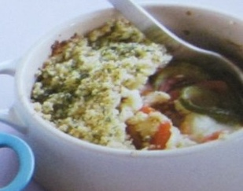

Crumble provençal à la feta
Ingrédients
3×
- 50 g de beurre
- 50 g de farine
- 50 g de chapelure
- sel
- origan
- 0.5 aubergine
- 4 c. à s. d'huile d'olive
- 2 petites tomates
- 1 courgette
- 2 gousses d'ail
- 80 g de feta
- poivre

Pour 3 personnes ou 4 mini cocottes.
Préparation
Étape 1
Sabler 50 g de beurre, 50 g de farine, 50 g de chapelure, du sel et de l’origan pour obtenir la pâte à crumble.
Étape 2
Émincer finement 0.5 aubergine et sauter les tranches à la poêle dans une partie des 4 c. à s. d'huile d'olive.
Étape 3
Trancher finement 2 petites tomates et 1 courgette. Hacher 2 gousses d'ail et écraser 80 g de feta.
Étape 4
Huiler le plat et alterner les légumes en couches. Ajouter ail, feta, un filet d’huile, sel, poivre et origan, puis recouvrir de crumble.
Étape 5
Cuire 25 à 30min à 180ºC.
Résumé
50 g de beurre
50 g de farine
50 g de chapelure
sel
origan
Sabler
0.5 aubergine
4 c. à s. d'huile d'olive
Émincer finement sauter
2 petites tomates
1 courgette
2 gousses d'ail
80 g de feta
Trancher finement
poivre
alterner recouvrir
Cuire 180ºC